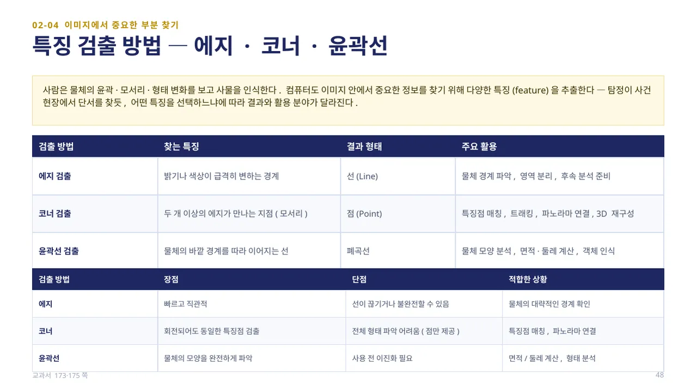
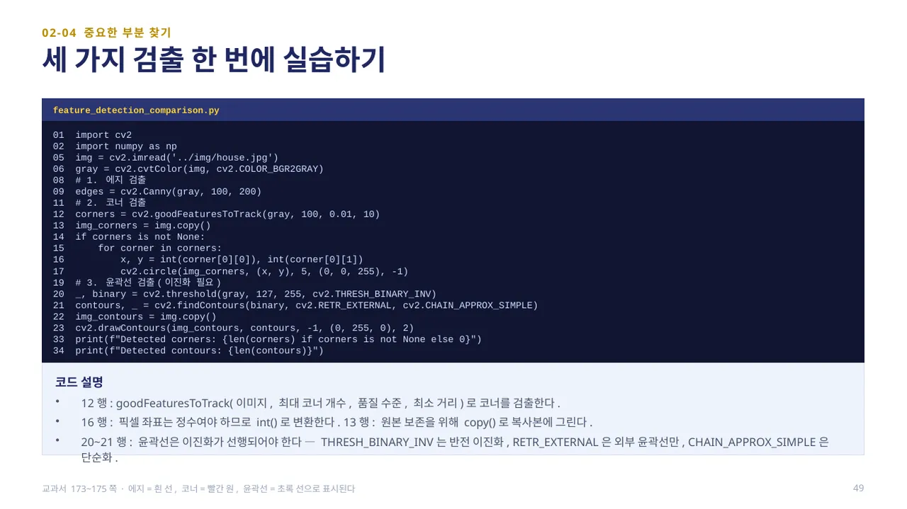
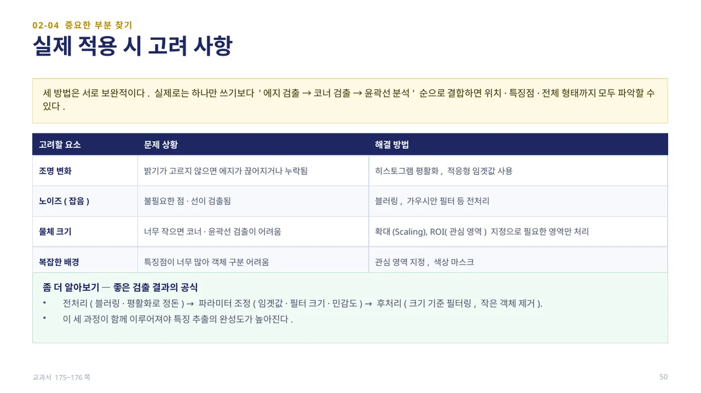
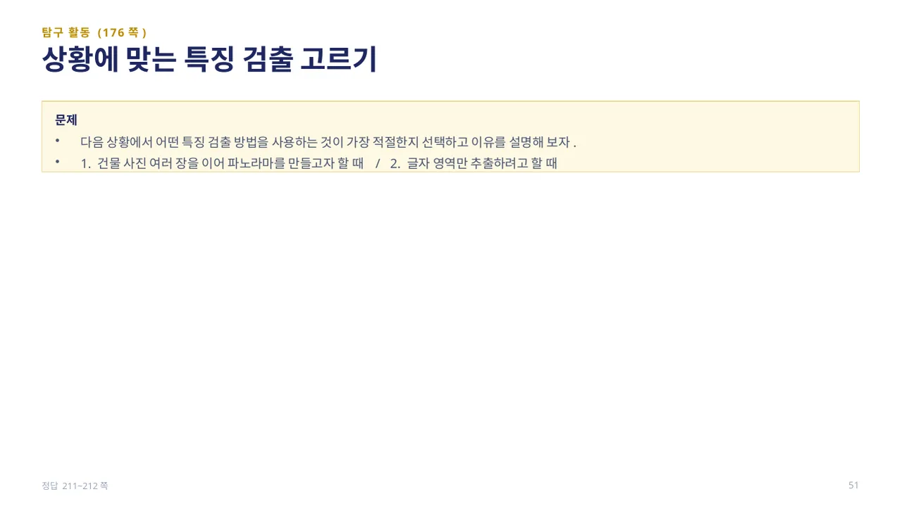
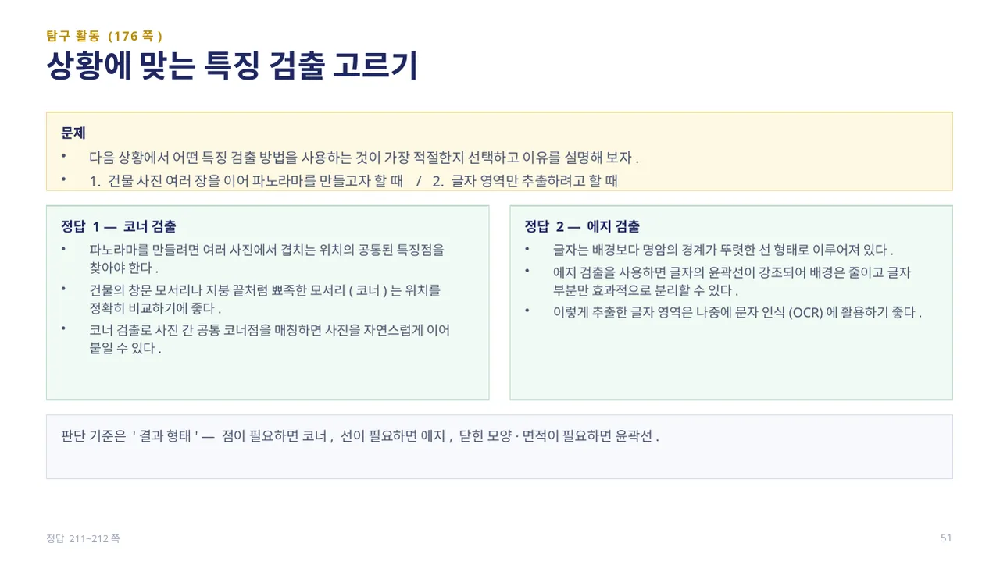

중단원 02. 컴퓨터 비전 라이브러리 활용 · 147–193쪽 소단원 04. 이미지에서 중요한 부분 찾기· 173–176쪽
이 웹 주제의 연계 범위: 173–176쪽
교과서 173–176쪽
에지·코너·윤곽선으로 중요한 부분 찾기
선·점·닫힌 경계 중 무엇이 필요한가요?

사람은 물체의 윤곽·모서리·형태 변화를 보고 사물을 인식합니다. 컴퓨터도 이미지 안에서 중요한 정보를 찾기 위해 다양한 특징(feature)을 추출합니다 — 탐정이 사건 현장에서 단서를 찾듯, 어떤 특징을 선택하느냐에 따라 결과와 활용 분야가 달라집니다.
에지 검출은 밝기·색상이 급격히 변하는 경계를 선(Line) 형태로 찾아 물체 경계 파악·영역 분리에 쓰입니다. 코너 검출은 두 개 이상의 에지가 만나는 지점(모서리)을 점(Point)으로 찾아 특징점 매칭·트래킹·파노라마 연결에 쓰입니다. 윤곽선 검출은 물체의 바깥 경계를 따라 이어지는 선을 폐곡선(Closed curve)으로 찾아 모양 분석·면적·둘레 계산에 쓰입니다. 에지는 빠르고 직관적이지만 선이 끊길 수 있고, 코너는 회전되어도 동일하게 검출되지만 전체 형태를 알기 어렵고, 윤곽선은 모양을 완전히 파악할 수 있지만 사용 전 이진화가 필요합니다. (교과서 173·175쪽)

feature_detection_comparison.py — 9행cv2.Canny(gray, 100, 200)으로 에지를 검출합니다. 12행cv2.goodFeaturesToTrack(gray, 100, 0.01, 10)은 (이미지, 최대 코너 개수, 품질 수준, 최소 거리)로 코너를 검출하며, 14~17행에서 코너가 있는지 확인한 뒤 int()로 좌표를 정수로 변환해 빨간 원을 그립니다(픽셀 좌표는 정수여야 함).
20~21행 윤곽선은 이진화가 먼저 필요합니다 — cv2.THRESH_BINARY_INV는 반전 이진화, cv2.RETR_EXTERNAL은 외부 윤곽선만, cv2.CHAIN_APPROX_SIMPLE은 단순화를 의미합니다. 23행cv2.drawContours()로 검출된 윤곽선을 초록색으로 그립니다. 결과는 에지=흰 선, 코너=빨간 원, 윤곽선=초록 선으로 표시됩니다. (교과서 173~175쪽)

세 방법은 서로 보완적입니다. 실제로는 하나만 쓰기보다 ‘에지 검출 → 코너 검출 → 윤곽선 분석’ 순으로 결합하면 위치·특징점·전체 형태까지 모두 파악할 수 있습니다.
조명 변화로 에지가 끊어지면 히스토그램 평활화·적응형 임곗값을 쓰고, 노이즈가 많으면 블러링·가우시안 필터로 전처리합니다. 물체가 너무 작으면 확대(Scaling)나 ROI(관심 영역) 지정으로 필요한 영역만 처리하고, 배경이 복잡하면 관심 영역 지정·색상 마스크를 사용합니다. 좋은 검출 결과는 전처리(정돈) → 파라미터 조정(임곗값·필터 크기·민감도) → 후처리(작은 객체 제거)의 세 과정이 함께 이루어져야 완성도가 높아집니다. (교과서 175~176쪽)

탐구 활동(176쪽): 1. 건물 사진 여러 장을 이어 파노라마를 만들고자 할 때, 2. 글자 영역만 추출하려고 할 때 — 각각 어떤 특징 검출 방법을 사용하는 것이 가장 적절한지 선택하고 이유를 설명해 봅니다.
답 보기답 숨기기

1. 코너 검출 — 파노라마를 만들려면 여러 사진에서 겹치는 위치의 공통된 특징점을 찾아야 합니다. 건물의 창문 모서리나 지붕 끝처럼 뾰족한 코너는 위치를 정확히 비교하기 좋아, 코너 검출로 공통 코너점을 매칭하면 사진을 자연스럽게 이어 붙일 수 있습니다. 2. 에지 검출 — 글자는 배경보다 명암의 경계가 뚜렷한 선 형태로 이루어져 있습니다. 에지 검출로 글자의 윤곽선을 강조하면 배경은 줄이고 글자 부분만 효과적으로 분리할 수 있어, 이후 문자 인식(OCR)에 활용하기 좋습니다. 판단 기준은 ‘결과 형태’입니다 — 점이 필요하면 코너, 선이 필요하면 에지, 닫힌 모양·면적이 필요하면 윤곽선입니다. (정답 211~212쪽)
 인공지능 파이썬 실무
인공지능 파이썬 실무